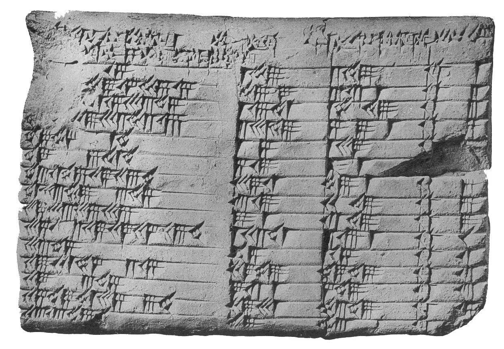
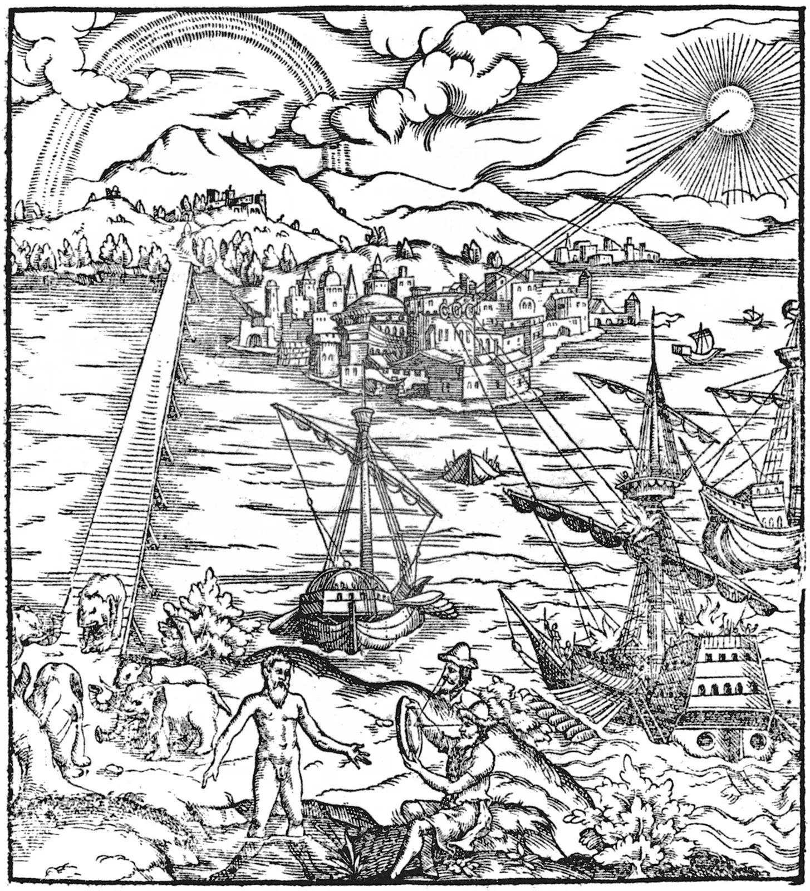
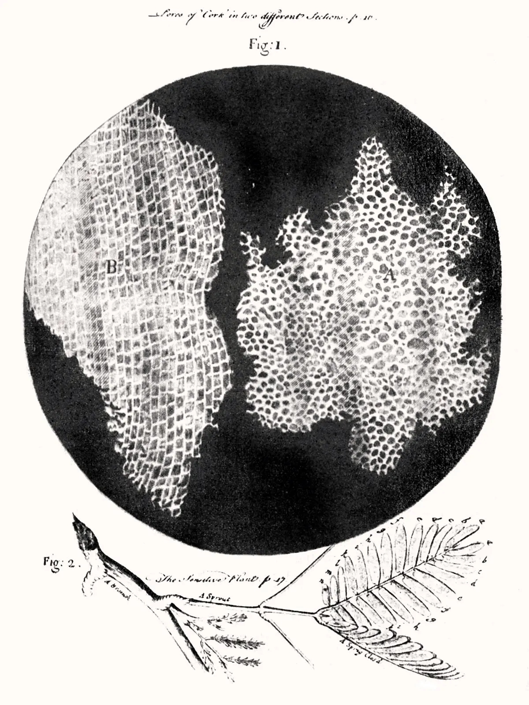
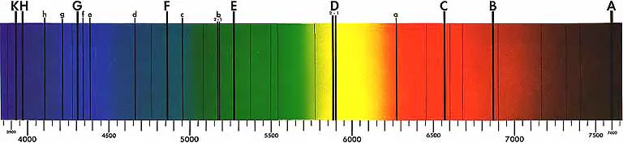
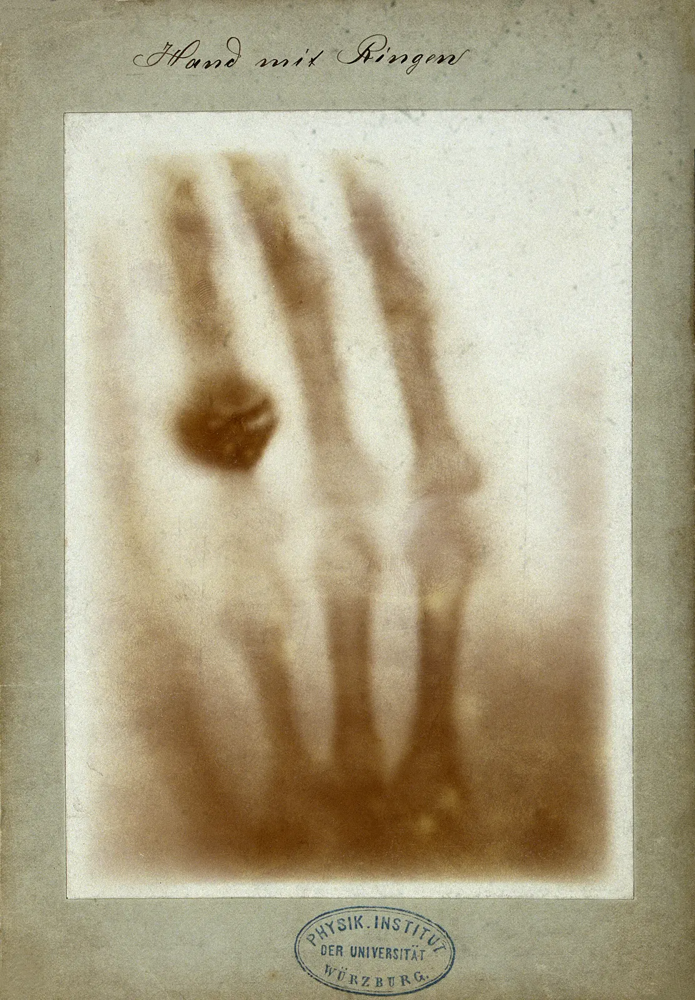
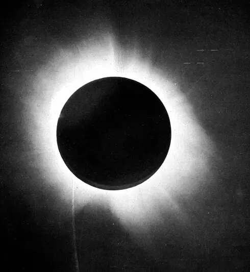
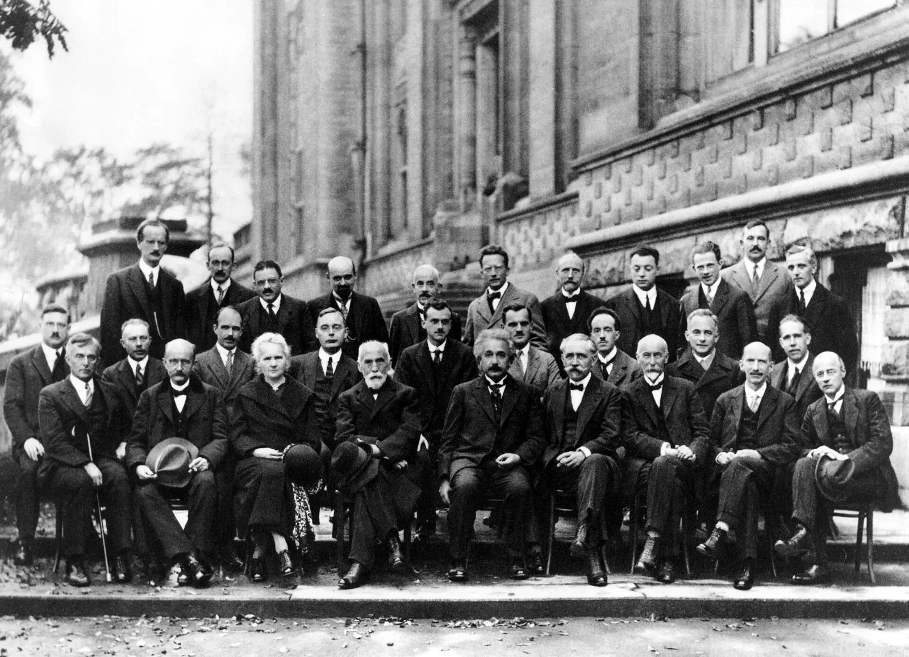
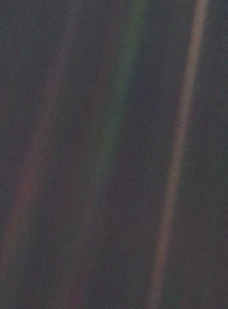

A history of science, read like sunlight
In 1814 Joseph von Fraunhofer mapped 574 dark lines in the Sun’s spectrum and could not say what they were; in 1859 they turned out to be a record of what the Sun is made of. This page uses his chart: it runs from red to the edge of the visible, and each dark line is something we learned.
Start at the red endCounting the sky
c. 20,000 BCE to 600 BCE700 nm
Long before writing, people kept count by cutting marks into bone, antler and stone. The Moon's phases gave the first calendar anyone could check against the sky, and counting them led toward arithmetic.
In Mesopotamia, scribes pressed base-60 numbers into clay. From 652 BCE they also wrote down what the Moon and planets did each night, and kept doing so for about six centuries. Dates for the earliest marks are approximate.
-
A baboon leg bone carved with groups of notches, found in 1950 at Ishango in what is now DR Congo.
What it replaced
Nothing was overturned here; the bone is evidence that people recorded quantities in durable marks very early. Jean de Heinzelin, who found it, saw arithmetic in the groups. Other researchers think the notches may track lunar phases, or nothing numerical at all.
What it made possible
Tally marks of this kind are the ancestors of written number systems. Counting in recorded units is what the Babylonian scribes later turned into a place-value system and tables of calculation.

-
An Old Babylonian clay tablet lists number triples that fit the Pythagorean relation, about a thousand years before Pythagoras.
What it replaced
Counting in tallies could not handle fractions or large quantities. Babylonian scribes used a place-value system in base 60. Historians still argue over what Plimpton 322 was for: a teaching aid, a trigonometric table, or something else.
What it made possible
Base 60 survives in the 60 minutes of an hour and the 360 degrees of a circle. Greek astronomers took Babylonian angle and time units, and Euclid and Ptolemy built on the same body of mathematics.

-
Scribes record the Moon, planets and weather every night for about six centuries, often called the longest continuous observing programme.
What it replaced
Omens had been read from single sightings. The diaries replaced isolated portents with a long series, and the series revealed repeating cycles in the sky, including the spacing of lunar eclipses.
What it made possible
Eclipse cycles became predictable from the records alone. Greek astronomers, Hipparchus and Ptolemy among them, drew on Babylonian observations to fit their models of the Moon and planets.
Counting and long records gave later thinkers numbers to reason with and a sky that behaved predictably.
Causes without gods
600 BCE to 200 CE650 nm
Around 600 BCE, thinkers in the Greek city of Miletus began to ask what the world was made of and gave answers that named no god. Their answers were often wrong, and they could be argued with.
That habit of public argument produced Euclid's proof from axioms, a measurement of the whole Earth from a shadow, and a model of the heavens detailed enough to predict planetary positions for centuries.
-
Thales, Anaximander and their followers explain natural events by natural causes, such as water or an unlimited substance.
What it replaced
Earthquakes, storms and floods had been the acts of gods. The Milesians offered explanations that anyone could examine and dispute. Our knowledge of their ideas comes mostly from later authors, so details are uncertain.
What it made possible
Later philosophers kept the habit of asking for a cause and defending it. Euclid's insistence on proof and Ptolemy's geometric model both belong to a tradition of giving reasons that others can check.
-
Euclid's Elements derives geometry and number theory from a short list of stated assumptions, one theorem at a time.
What it replaced
Earlier geometry, Babylonian and Egyptian, gave working rules without arguing for them. Euclid collected results from predecessors such as Eudoxus and ordered them so that each step rests on earlier ones.
What it made possible
The Elements stayed a standard textbook for over two thousand years. Its method of definitions, axioms and proofs underlies Ptolemy's astronomy, al-Khwarizmi's algebra, Newton's Principia and, later, formal logic.

Built on c. 1800 BCE, Plimpton 322 and base-60 arithmetic c. 600 BCE, Natural causes proposed at Miletus
Led to c. 240 BCE, Eratosthenes measures the Earth c. 150 CE, Ptolemy's Almagest predicts the planets c. 820, Al-Khwarizmi names algebra in Baghdad c. 1021, Ibn al-Haytham's Book of Optics 1687, Newton's laws of motion and gravitation 1936, Turing's machine that computes anything
-
From the Sun's angle at Alexandria, about 7.2 degrees or one fiftieth of a circle, and the distance to Syene, he gets the circumference.
What it replaced
The Earth's size had been a matter of guesswork. Eratosthenes treated the Sun's rays as parallel and applied Euclid's geometry. The ancient length unit he used is uncertain, so how close he came is debated.
What it made possible
Measuring the planet from a shadow showed that geometry could size objects no one could reach. Later astronomers used the same reasoning for the distance to the Moon and, much later, for survey triangulation.
-
An Earth-centred model of circles within circles predicted planetary positions well enough to be used for about 1,400 years.
What it replaced
Earlier Greek models fitted the planets poorly. Ptolemy combined Hipparchus's work with Babylonian records and added devices such as the equant to match the observed motions.
What it made possible
The Almagest gave astronomers a model to test, correct and eventually reject. Copernicus wrote his book in its form, and the arguments about its flaws drove astronomy until Kepler and Newton.
Proof, measurement and a working model of the sky passed to scholars who translated, checked and extended them.
Numbers and experiments
600 to 1500610 nm
Scholars in India, Baghdad and Cairo took Greek and Indian mathematics, translated them, and pushed them further. Zero became a number, algebra got a name, and optics became a subject settled by experiment.
In Mainz around 1455, Gutenberg cast metal type and printed identical copies. Tables, diagrams and arguments could now be compared page for page, in different cities, by people who had never met.
-
The Brahmasphutasiddhanta states rules for arithmetic with zero and with negative numbers.
What it replaced
Zero had served as a placeholder in written numbers. Brahmagupta treated it as a number that can be added, subtracted and multiplied. His rule for division by zero was incomplete, and later Indian mathematicians revised it.
What it made possible
The decimal system with zero reached Baghdad, where al-Khwarizmi wrote about it. Through Arabic and Latin texts it became the way Europeans did arithmetic and bookkeeping.
-
His book on completion and balancing (al-jabr) solves equations by general rules, and a second text teaches Indian numerals.
What it replaced
Equations had been solved case by case, often through geometric pictures. Al-Khwarizmi classed them by type and gave a method for each. Latin versions of his name became the word algorithm.
What it made possible
Algebra let later mathematicians state problems in symbols and solve whole families at once. The idea of an algorithm, a fixed procedure that gives an answer, is what Turing later made precise.
-
Light enters the eye from objects, and each claim about it is tested by controlled experiment, including with the camera obscura.
What it replaced
Greek theories held that vision came from rays sent out by the eye, and Ptolemy and Euclid had treated optics mainly as geometry. Ibn al-Haytham argued that the eye receives light and tested this with instruments.
What it made possible
The Latin translation shaped Kepler's account of the eye and the telescope's optics. His habit of testing a claim against a designed experiment became a core method of later European science.

-
Movable metal type makes identical copies of a text, a table or a diagram.
What it replaced
Copying by hand introduced errors and made each copy slightly different. Printing fixed one version and spread it. Movable type was already used in East Asia, and the exact date of Gutenberg's first press is approximate.
What it made possible
Astronomical tables, anatomical plates and arguments could be circulated unaltered. Copernicus and Vesalius both published printed books, and scholars could now check each other's numbers against identical editions.
Algebra, tested optics and cheap identical books reached a Europe ready to question the old model of the sky.
The Earth moves
1543 to 1687580 nm
In 1543 two printed books appeared in Europe: one placed the Sun at the centre, the other corrected the textbook picture of the human body. Both contradicted ancient authorities and both could be checked.
Over the next 144 years, the telescope, the microscope and the prism supplied new evidence. Kepler's ellipses and Newton's laws joined the heavens and the ground under one set of rules.
-
De revolutionibus describes the Earth as a planet that rotates daily and orbits the Sun yearly.
What it replaced
Ptolemy's Earth-centred model had stood for about 1,400 years. Copernicus kept circular orbits and still needed small circles to fit the data, so his system was not at first more accurate. It was simpler in its order of the planets.
What it made possible
Kepler and Galileo both started from the Sun-centred arrangement. Printing carried the book to astronomers across Europe, who could test its tables against their own observations.

-
De humani corporis fabrica describes and illustrates the human body from the author's own dissections.
What it replaced
Teaching had relied on Galen, who dissected animals and described them as if they were human. Vesalius found and listed errors by looking at actual bodies, though he still followed Galen on many points.
What it made possible
Accurate printed plates made anatomy something to inspect directly. Later physicians kept checking the body against the book, a habit that carried into Hooke's observations with the microscope.
Built on c. 1455, Gutenberg's press at Mainz
-
Astronomia nova derives elliptical orbits from Tycho Brahe's naked-eye observations of Mars, gathered over many years.
What it replaced
Every earlier model, Copernicus's included, used circles. Kepler spent years on Mars before an 8 arc-minute mismatch in Tycho's data led him to drop the circle. Tycho's observations were the evidence the result depended on.
What it made possible
Kepler's laws gave Newton the planetary motions his gravity had to explain. Kepler's method of fitting a model to precise data later shaped how astronomers detect planets from stellar wobble.
-
Sidereus Nuncius reports mountains on the Moon and four bodies orbiting Jupiter, observed through a telescope.
What it replaced
Aristotle's heavens were perfect and everything orbited the Earth. Craters on the Moon and moons circling another planet contradicted both points. The telescope was a Dutch invention that Galileo improved.
What it made possible
Anyone with a telescope could repeat the observations, so evidence stopped depending on authority. Later astronomers used larger instruments to find galaxies, redshifts and, in 1995, the first planet around a Sun-like star.

-
Micrographia prints detailed drawings of fleas, mould and cork, and names the compartments seen in cork "cells".
What it replaced
The smallest visible things had been out of sight and out of argument. Hooke showed there was structure below the limit of the eye. What he saw in cork were the walls of dead cells, not living ones.
What it made possible
Cells were later recognised as the basic units of living things. Microscopy let Koch and others see the organisms behind disease, and later work in biology kept relying on better instruments.

-
In a paper to the Royal Society, Newton shows that white light is a mixture of colours, which a second prism recombines.
What it replaced
The common view held that a prism added colour to white light. Newton used a second prism to turn the colours back into white, which showed the colours were already there.
What it made possible
Spectra became a measurable thing. Fraunhofer's dark lines and Kirchhoff's chemical analysis of starlight both depend on spreading light into its colours, as Newton did.
-
Principia sets out three laws of motion and universal gravitation, one law for a falling body and the Moon.
What it replaced
Terrestrial and celestial motion had been treated as separate kinds. Newton derived Kepler's laws from an inverse-square force. Leibniz developed calculus independently, and the priority dispute between them was bitter.
What it made possible
Engineers and astronomers could now compute trajectories. Orbits of satellites and probes, and the first test of Einstein's relativity in the 1919 eclipse, rest on Newton's mathematics as the thing to improve.
Built on c. 300 BCE, Euclid's Elements: proof from axioms 1609, Kepler finds Mars moves on an ellipse 1610, Galileo sees four moons of Jupiter
Led to 1865, Maxwell shows light is an electromagnetic wave 1905, Einstein's 1905 papers 1915, Einstein's general relativity 1957, Sputnik 1 reaches orbit 1969, Apollo 11 lands on the Moon 1977, Voyager 1 and 2 launch
Laws of motion and the habit of measuring left chemists and physicists a method and a toolkit.
Matter and current
1789 to 1869555 nm
Chemistry became quantitative: Lavoisier weighed everything, and Dalton gave each element its own atom. A table of elements followed, with gaps for those still to be found.
Electricity moved from curiosity to engineering as Volta's battery and Faraday's induction led to Maxwell's equations. In between, Fraunhofer and Kirchhoff showed that the dark lines in sunlight carry a chemical signature of the Sun itself.
-
His Traité élémentaire states conservation of mass, lists the elements, and attributes burning to oxygen.
What it replaced
Phlogiston theory said burning released a substance from the material. Lavoisier weighed what went in and what came out and found that burning combines a material with oxygen. Marie-Anne Paulze Lavoisier helped with the records and illustrations.
What it made possible
Reliable bookkeeping of mass gave chemistry a firm base. Dalton's atoms and Mendeleev's table both depend on measured combining weights of elements, which Lavoisier's method made routine.
-
Stacked discs of zinc and silver separated by wet cloth give the first battery.
What it replaced
Electricity had come only as sparks from friction machines. Volta's pile gave a continuous current that could be used for experiments. Luigi Galvani's earlier frog experiments had prompted the dispute that led to it.
What it made possible
A steady current made experiments such as Faraday's possible, and electrochemistry let Humphry Davy isolate new elements. Without a battery, the study of electromagnetism could not have gone forward.
-
A New System of Chemical Philosophy proposes that every element is made of atoms with a characteristic weight.
What it replaced
The atom had been a philosophical idea since the Greeks. Dalton turned it into a quantity that chemists could measure from the proportions in which elements combine. Several of his weights were wrong.
What it made possible
Atomic weights let Mendeleev order the elements, and a chemical formula could be written for each compound. Kirchhoff's identification of elements in the Sun assumed each element had a distinct identity.
-
Joseph von Fraunhofer charts hundreds of dark lines in the solar spectrum and labels the strongest with letters.
What it replaced
Newton's spectrum looked like a smooth band of colour. Fraunhofer's finer prisms and slit showed it was crossed by 574 lines, the figure usually given. He could not say what caused them.
What it made possible
The lines became a fixed set of reference marks for measuring glass and light. Kirchhoff and Bunsen later explained them as the fingerprints of elements, and that opened chemical analysis of the stars.

-
A changing magnetic field drives a current in a nearby wire, the principle of the generator and the transformer.
What it replaced
Electricity and magnetism had been treated as two separate forces. Faraday showed that one produces the other. Joseph Henry in the United States found induction at about the same time.
What it made possible
Generators turned motion into electric power on a large scale. Faraday's idea of a field filling space gave Maxwell the picture he needed to write electromagnetism as one set of equations.
-
At Heidelberg they show each element emits and absorbs light at its own wavelengths, so the Sun's dark lines name its contents.
What it replaced
Auguste Comte had said in 1835 that the composition of stars could never be known. The two found sodium's bright lines sat exactly where Fraunhofer's dark D lines did, and extended the match to other elements.
What it made possible
Spectroscopy found new elements, such as caesium and rubidium, and showed that stars are made of the same elements as the Earth. Bohr's atom and Hubble's redshifts both read light by its lines.
-
"A Dynamical Theory of the Electromagnetic Field" unites electricity and magnetism, and finds that light is a wave in that field.
What it replaced
Light, electricity and magnetism had been separate subjects. Maxwell's equations predicted waves that travel at the measured speed of light. Heinrich Hertz confirmed such waves in the laboratory in 1887.
What it made possible
Radio, radar and X-ray physics follow from the theory. Planck and Einstein started from its conflict with the physics of hot bodies, and special relativity arose from its demand that light's speed be constant.
-
Elements arranged by atomic weight show repeating properties, with spaces left for elements not yet found.
What it replaced
Chemists had a growing list of elements with no known order. Mendeleev placed them by weight and by properties, reversing the order for some. Gallium, scandium and germanium were later found to fit his gaps.
What it made possible
The table gave chemists a map for predicting new elements. Its logic needed an explanation, and Bohr's account of electron shells in 1913 supplied it.
Atoms, spectral lines and electromagnetic waves arrived at 1900 as three separate puzzles that needed one theory.
The record of life
1796 to 1953520 nm
Biology found its causes. Jenner tested a vaccine, Koch tied a single bacterium to a disease, and Fleming's mould gave doctors a drug that kills bacteria inside the body.
Beneath the medicine ran a second line: Darwin on descent with modification, Mendel on discrete inheritance, and in 1953 the structure of DNA. The two ideas were put together only in the 1930s and 1940s.
-
Edward Jenner inoculates a boy with cowpox and shows he resists smallpox; the disease is declared eradicated in 1980.
What it replaced
Smallpox had been met with variolation, a risky inoculation with the disease itself. Jenner used a milder related disease. Farmers had noticed the effect of cowpox before him, and Benjamin Jesty vaccinated his family in 1774.
What it made possible
Vaccination established that deliberate exposure could give immunity. Pasteur extended the method to other diseases, and the same logic produced the global campaign that ended smallpox.
-
Evolution by natural selection explains how species descend from common ancestors; Wallace reached the idea independently, and their papers were read together in 1858.
What it replaced
Species had been seen as fixed, each made separately. Darwin gathered decades of evidence from breeding, fossils and geography. He could not explain how traits are inherited, and that gap was filled later.
What it made possible
Common descent organised all of biology and pointed to a shared origin of life. When genetics was joined to selection, evolution became a quantitative science, and DNA sequences later let us trace relationships directly.

-
Crossing thousands of pea plants shows that inheritance works in discrete units, with predictable ratios.
What it replaced
Blending inheritance assumed that offspring average their parents' traits. Mendel's counts showed that traits stay distinct and can reappear in later generations. His paper was largely unread until 1900.
What it made possible
Rediscovery in 1900 started genetics. Genes became physical objects on chromosomes, and Watson and Crick's helix later explained how those units are copied.
-
Robert Koch shows that a specific bacterium causes anthrax; with Pasteur's work, this establishes germ theory.
What it replaced
Disease was often blamed on bad air or imbalance within the body. Koch grew the organism in pure culture and reproduced the illness in animals. He later formalised the steps of proof that carry his name.
What it made possible
Identifying the cause allowed targeted prevention, sterile surgery and the search for cures. Fleming's penicillin was a response to this knowledge of bacteria.
-
Alexander Fleming notices Penicillium mould clearing bacteria from a dish; Florey, Chain and Heatley turn it into a drug by the early 1940s.
What it replaced
Doctors had few ways to treat bacterial infections once established. Fleming's observation was an accident of a contaminated culture, and he did not purify the drug. The Oxford team did that work.
What it made possible
Penicillin opened the age of antibiotics, which made surgery, childbirth and wound care far safer. Resistance to antibiotics is now a leading medical problem.
-
A model of DNA as two paired strands, built using X-ray diffraction data from Rosalind Franklin and Raymond Gosling.
What it replaced
Many biologists had expected proteins to carry heredity. Franklin and Gosling's Photo 51 showed a helix, and Watson and Crick built the model with the paired bases. Franklin's role was credited only vaguely at the time.
What it made possible
The structure explained how genetic information is stored and copied. Reading it letter by letter became the Human Genome Project, and cutting it at chosen places became CRISPR.
Descent, inheritance and a molecular structure for DNA left biology with a code it could read.
Relativity and quanta
1895 to 1929490 nm
In 1895 Röntgen found a ray that passed through flesh, and within three years the Curies had found elements that give off rays on their own. By 1900 the old picture of matter and light was failing on several fronts at once.
Planck, Einstein, Bohr and the quantum theorists rebuilt physics in thirty years. Light came in packets, space and time bent, and the atom turned out to be a thing of energy levels. Spectral lines supplied much of the evidence.
-
Wilhelm Röntgen finds a new penetrating radiation from a discharge tube and photographs the bones of a hand.
What it replaced
Matter had seemed opaque or transparent only in ways that light could show. Röntgen's rays passed through flesh and left bones visible. He named them X-rays because he did not know what they were.
What it made possible
Within a year X-ray images were used in medicine. X-ray diffraction by crystals later let Franklin and Gosling photograph DNA, and Becquerel's study of radiation followed from the same excitement.

-
Marie and Pierre Curie separate two new radioactive elements from tonnes of ore, following Becquerel's 1896 discovery of radioactivity.
What it replaced
Atoms had been treated as unchanging. Radioactivity, as Rutherford and Soddy showed in 1902, means some atoms emit energy and turn into others. Marie Curie coined the word radioactivity and won two Nobel Prizes, in physics and in chemistry.
What it made possible
Radioactivity gave physicists a way to probe the inside of atoms, which led Rutherford to the nucleus. It also led to cancer radiotherapy and to the later study of nuclear energy.
-
Max Planck explains the light from a hot body by assuming energy is exchanged in discrete amounts.
What it replaced
Classical theory predicted that a hot body emits unlimited energy at short wavelengths, which did not happen. Planck used a quantum of energy as a mathematical device, and historians debate whether he at first thought it was real.
What it made possible
Einstein took the quantum seriously in 1905, and Bohr used it for the atom. The constant Planck introduced appears throughout quantum mechanics.
-
Light quanta and the photoelectric effect, special relativity, and the equivalence of mass and energy, all within one year.
What it replaced
Maxwell's theory of light treated it only as a wave and assumed a medium called the ether. Einstein dropped the ether, made the speed of light constant for all observers, and gave light a particle aspect.
What it made possible
Relativity led to general relativity and to nuclear physics through E = mc squared. The photoelectric effect underlies solar cells and light sensors, and gave the quantum its first test outside heat radiation.
-
Niels Bohr's model of the atom explains why each element has its own spectral lines.
What it replaced
Rutherford's nuclear atom should have collapsed under classical physics, and no one could explain the lines Kirchhoff catalogued. Bohr allowed only certain orbits, with light emitted when an electron jumps between them.
What it made possible
The model accounted for hydrogen's spectrum and for the order of Mendeleev's table. Its failures with heavier atoms pushed physicists toward the full quantum mechanics of the 1920s.
-
Gravity is the curvature of spacetime; measurements of starlight bending during the 1919 eclipse support it.
What it replaced
Newton described gravity as a force acting at a distance. Einstein described it as geometry shaped by mass and energy. It also explained a small discrepancy in the orbit of Mercury that Newton's law could not.
What it made possible
The theory underlies modern cosmology, black holes and gravitational waves. GPS clocks must be corrected for its effects, and LIGO's detection in 2015 confirmed one of its predictions.

-
Heisenberg's matrix mechanics, Schrödinger's wave equation and the uncertainty principle give a full theory of the atom.
What it replaced
Bohr's orbits were a patchwork of classical rules and quantum rules. The new theory described particles by wave functions and set a limit on what can be known at once, such as position and momentum. Its interpretation is still debated.
What it made possible
It explains chemistry, the behaviour of semiconductors and the stability of matter. The transistor, the laser and the whole electronic economy follow from it.

-
Distant galaxies recede faster the farther away they are, shown by redshifted spectral lines; Lemaître derived the relation in 1927.
What it replaced
The universe had been assumed static. Hubble used redshifts that Vesto Slipher had measured and distances from Henrietta Leavitt's Cepheid relation, so the result drew on several people's work.
What it made possible
Expansion pointed to a hot, dense beginning, which Penzias and Wilson's radiation later supported. It also posed the questions about dark energy that are still open.
Quantum theory and relativity left behind a new picture of matter, and instruments built on it began to reach the stars.
Machines that compute
1936 to 1991465 nm
In 1936 Turing described a machine that could carry out any computation. Eleven years later Bell Labs built a solid-state switch to run such machines cheaply, and Shannon gave information a unit, the bit.
Computers were then joined together. ARPANET sent its first message in 1969, and at CERN in 1989 a proposal for linked documents became the World Wide Web.
-
"On Computable Numbers" describes an abstract machine that can carry out any computation, and shows some problems cannot be solved.
What it replaced
Mathematicians had hoped every well-posed problem had a mechanical solution. Turing, and Alonzo Church independently, showed this was false. The decision problem has no general algorithm.
What it made possible
The universal machine is the theoretical model of the stored-program computer. It gave the word algorithm a precise meaning, and it set the limits that computer science still studies.
-
John Bardeen, Walter Brattain and William Shockley build the transistor, a solid-state switch and amplifier.
What it replaced
Computers had used vacuum tubes, which were large, hot and unreliable. A transistor does the same job in a small piece of semiconductor. Bardeen and Brattain built the first, and Shockley developed the theory and a better design.
What it made possible
Integrated circuits and microprocessors followed, and with them computers small enough to fly to the Moon. Every modern chip contains billions of transistors.

-
"A Mathematical Theory of Communication" defines information as a quantity and shows how much a channel can carry.
What it replaced
Engineers treated each medium, telegraph or telephone, as its own problem. Shannon showed one theory covers all of them, with a limit on error-free transmission set by noise.
What it made possible
Digital coding, compression and error correction rest on the theory. Packet networks, mobile phones and deep-space radio links all use coding built around limits that Shannon calculated.
-
On 29 October 1969 a terminal at UCLA sends "LO" to Stanford Research Institute before the system crashes.
What it replaced
Computers had been isolated machines, and remote links were fixed telephone circuits. ARPANET passed data as packets over shared lines. The idea of packets came from Paul Baran and Donald Davies independently.
What it made possible
Networks grew into the internet, with shared protocols adopted in 1983. Email, file transfer and the web all ran on this foundation.
-
Tim Berners-Lee proposes linked documents at CERN; the first website runs there by the end of 1990.
What it replaced
Information on the internet sat on separate machines in incompatible forms. Berners-Lee combined hypertext with addresses, a protocol and a browser, so that anyone could link to any page.
What it made possible
Physicists used it first to share papers, and the whole world soon followed. Genome databases, machine-learning datasets and open scientific archives all depend on it.
Switches, bits and networks turned computation into infrastructure that every later field began to use.
Leaving the ground
1957 to 2022445 nm
On 4 October 1957 Sputnik orbited the Earth, and twelve years later Apollo 11 landed on the Moon. The trajectories were Newton's, and the guidance computers were built from transistors.
Instruments then read light that the eye cannot see. They found the cosmic microwave background, the first planets around other stars, and with the James Webb Space Telescope the infrared glow of distant galaxies.
-
The first artificial satellite is launched on 4 October 1957 and transmits radio signals for about three weeks.
What it replaced
Orbit had been a calculation in Newton's Principia, and no object had gone there. Sputnik proved a rocket could lift a payload to orbital speed, about 8 kilometres per second.
What it made possible
Weather, navigation and communications satellites followed, and so did crewed flight. The race it started led directly to Apollo 11 twelve years later.
-
Arno Penzias and Robert Wilson report a uniform microwave signal, leftover radiation from a hot early universe.
What it replaced
A steady-state universe had rival support among cosmologists. The two found a persistent noise in their Bell Labs horn antenna that did not come from pigeons or equipment. A Princeton group had predicted such radiation.
What it made possible
The background is the strongest evidence for a hot beginning. Satellite maps of its tiny variations, from COBE to Planck, fix the age and contents of the universe.
-
Apollo 11 lands on the Moon on 20 July 1969; its guidance computer was an early large user of integrated circuits.
What it replaced
The Moon had been a destination only in imagination. Reaching it required Newtonian orbital mechanics worked out in real time on a computer that weighed about 32 kilograms.
What it made possible
Apollo brought back 382 kilograms of lunar rock, which fixed the Moon's age and helped to date the early solar system. Its demand for reliable electronics pulled integrated circuits into mass production.

-
Two probes flew past the outer planets; Voyager 1 entered interstellar space in 2012.
What it replaced
The outer planets had been points of light and smudges. Voyager's flybys showed volcanoes on Io and rings around all four giant planets. The mission used a rare alignment of planets, and that was not repeatable.
What it made possible
Voyager 1 is the first human-made object in interstellar space, and it still sends data. Its flybys set the questions that later missions to Jupiter and Saturn were built to answer.

-
Michel Mayor and Didier Queloz detect a planet around a Sun-like star from the wobble in the star's spectral lines.
What it replaced
Planets beyond the Sun had been presumed, and none had been confirmed around a main-sequence star. This one was a gas giant orbiting in about four days, which no model of the solar system predicted.
What it made possible
Thousands of exoplanets are now known, many found by the same Doppler method or by the transit method that Kepler's mission used. They turned the question of life elsewhere into an observational one.
-
The James Webb Space Telescope released its first images in July 2022; it observes in infrared, where cosmic expansion has stretched ancient light.
What it replaced
Hubble's view of the earliest galaxies stopped where their light shifted out of visible range. Webb's 6.5-metre mirror and infrared instruments reach past that limit and read atmospheres of planets.
What it made possible
Webb studies galaxies from the first few hundred million years and the chemistry of exoplanet atmospheres. Its data are only the start of what the telescope was built to deliver.

Telescopes in orbit and probes beyond it gave the next era data on a scale that needs new tools to read.
Reading the code
2003 to today425 nm
The most recent lines come from reading codes of several kinds: the genome, the proteins it specifies, the particles that make up matter, and ripples in spacetime.
Computing and networks are the common tools. Genome sequences sit in shared databases, neural networks predict protein folds, and detectors at CERN and LIGO filter huge data streams. Which of these will prove lasting, history has yet to say.
-
The Human Genome Project is declared complete in April 2003, with about three billion base pairs sequenced.
What it replaced
The human genome had been known only in fragments. The public project and a rival company effort both produced drafts in 2001. Gaps remained, and a gap-free sequence of a human genome, without the Y chromosome, appeared only in 2022.
What it made possible
A reference sequence made it possible to find genes tied to disease and to compare people and species. Gene editing and protein-structure prediction both rely on this reference.
-
ATLAS and CMS announce a new particle consistent with the Higgs boson on 4 July 2012, predicted in 1964.
What it replaced
The Standard Model had no explanation of mass that could be tested. Peter Higgs, François Englert and Robert Brout, among others, proposed a field in 1964. The two detectors found the particle at about 125 GeV.
What it made possible
The result completed the Standard Model's list of particles. Measuring how the particle behaves is the main task of the Large Hadron Collider, and any deviation would point to new physics.

-
Emmanuelle Charpentier and Jennifer Doudna show that CRISPR-Cas9 can be programmed to cut chosen DNA sequences.
What it replaced
Editing a genome had required slow, specific tools for each target. CRISPR is a bacterial immune system, and the two showed it could be redirected with a short guide RNA. They shared the 2020 Nobel Prize in Chemistry.
What it made possible
Laboratories edit genes in plants, animals and human cells at low cost. The first CRISPR-based therapies for blood disease have been approved, and the ethics of editing embryos is an open debate.
-
A deep neural network trained on graphics processors wins the ImageNet image-recognition contest by a wide margin.
What it replaced
Image recognition had relied on hand-designed features. Alex Krizhevsky, Ilya Sutskever and Geoffrey Hinton showed that a network could learn them from a million labelled images, given enough computing power.
What it made possible
Deep learning spread to speech, translation and science. AlphaFold uses the approach for biology, and the same hardware that served video games became the base for training.
-
LIGO detects gravitational waves from two merging black holes on 14 September 2015.
What it replaced
Einstein predicted gravitational waves in 1916, and for a century they were beyond measurement. The signal moved the mirrors by far less than the width of a proton, over arms 4 kilometres long.
What it made possible
Gravity is now an observing channel beside light. In 2017 a neutron-star merger was seen in both gravitational waves and light, and the observations tested relativity with strong gravity.

Built on 1915, Einstein's general relativity
-
At the CASP14 assessment, AlphaFold 2 predicts protein structures to near-experimental accuracy.
What it replaced
Determining a protein's shape took months of laboratory work, and predicting it from sequence had been an open problem for fifty years. AlphaFold 2 matched experiments for many, though not all, proteins.
What it made possible
A public database now holds predicted structures for over 200 million proteins. Biologists use them to plan experiments and design drugs, and they check each prediction against laboratory data.
Readable codes in biology, matter and spacetime leave questions that none of the present instruments can answer yet.
Past the visible
Not yet datedBelow 380 nm
Visible light is a narrow slice of the electromagnetic spectrum. Radio waves are longer than a kilometre, and gamma rays are shorter than an atom. Most of what exists gives no sign in the part of the spectrum that eyes can use.
These are lines nobody has been able to label. Each has evidence behind it and no agreed explanation. Some may be answered within a decade, and others may stay open for much longer.
-
What is dark matter?
Galaxies rotate, and clusters hold together, as if they contain several times more mass than the stars and gas we can see. Gravitational lensing agrees. No detector has yet seen a particle that could account for it.
Built on 1929, Hubble shows the universe is expanding 1965, Penzias and Wilson find the microwave background
-
What drives the acceleration?
In 1998 two supernova surveys found that the expansion of the universe is speeding up. Something works against gravity on the largest scales. Whether it is a constant energy of empty space or something changing is not known.
Built on 1915, Einstein's general relativity 1929, Hubble shows the universe is expanding
-
Do gravity and quantum theory join?
General relativity and quantum mechanics each pass every test made so far, and they do not fit together. Near a black hole or at the Big Bang both should apply. Candidate theories exist, and none has been confirmed by experiment.
Built on 1915, Einstein's general relativity 1925, Quantum mechanics from 1925 to 1927 2015, LIGO hears two black holes merge
-
How did chemistry become biology?
Life was present on Earth within a billion years of the planet's formation, but the steps from simple molecules to the first cells are unknown. We also do not know whether it has happened anywhere else. No second example has been found.
Built on 1859, Darwin's Origin of Species 1953, Watson and Crick's double helix 1995, Mayor and Queloz find 51 Pegasi b
-
How does a brain produce experience?
Neuroscience links brain activity to perception, memory and action, yet no accepted theory says why any of it feels like something. The machines we have built perform tasks once thought to need minds, and what they understand is disputed.
Built on 1936, Turing's machine that computes anything 2012, AlexNet wins the ImageNet contest
Every line so far
Each line on this band is one entry above. The ones you opened are drawn in full. The five bright lines at the dark end are the questions nobody has dated yet.
Sources and further reading
- Royal Belgian Institute of Natural Sciences, The Ishango Bone (RBINS exhibition page)
- Institute for the Study of the Ancient World (NYU), Before Pythagoras: Plimpton 322
- Livius.org, Astronomical Diaries
- Encyclopaedia Britannica, Eratosthenes
- MacTutor History of Mathematics (St Andrews), Brahmagupta
- Encyclopaedia Britannica, Kitab al-manazir (Ibn al-Haytham's Optics)
- Stanford Encyclopedia of Philosophy, Johannes Kepler
- Hearnshaw, Auguste Comte's blunder (Journal of Astronomical History and Heritage, 2010)
- Smithsonian Institution Archives, The Simultaneous Discovery of Electro-Magnetic Induction by Michael Faraday and Joseph Henry
- British Society for the History of Medicine, Jenner, Fewster and Jesty
- Nature, Quiet debut for the double helix
- Encyclopaedia Britannica, Astronomy: Galaxies and the expanding universe
- Stanford Encyclopedia of Philosophy, Turing Machines
- Leonard Kleinrock (UCLA), The first words on the Internet
- CERN, The birth of the Web
- Physics Today (AIP), The scientific legacy of the Apollo program
- Nobel Prize in Physics 2019, Press release (NobelPrize.org)
- NASA JPL, NASA spacecraft embarks on historic journey into interstellar space
- European Space Agency, First images from Webb Telescope reveal unseen universe
- Nurk et al., The complete sequence of a human genome (Science, 2022)
- CERN, The Higgs boson
- Nobel Prize in Chemistry 2020, Popular information (NobelPrize.org)
- LIGO Scientific Collaboration, GW150914: The Advanced LIGO detectors in the era of first discoveries
- EMBL, AlphaFold 200 million structures (news, 2022)
Plates
- c. 20,000 BCE, Notches on the Ishango bone: JhowieNitnek, CC BY-SA 4.0
- c. 1800 BCE, Plimpton 322 and base-60 arithmetic: Photographer unknown, via Wikimedia Commons, Public domain
- c. 300 BCE, Euclid's Elements: proof from axioms: Oxyrhynchus papyrus, via Wikimedia Commons, Public domain
- c. 1021, Ibn al-Haytham's Book of Optics: Unknown illustrator, Public domain
- 1543, Copernicus puts the Sun at the centre: Nicolaus Copernicus, De revolutionibus (1543), scan via Wikimedia Commons, Public domain
- 1610, Galileo sees four moons of Jupiter: Galileo Galilei, Public domain
- 1665, Hooke draws the microscopic world: Robert Hooke, Micrographia (1665), Public domain
- 1814, Fraunhofer maps the dark lines of sunlight: Wikimedia Commons user MaureenV, Public domain
- 1859, Darwin's Origin of Species: Charles Darwin, Public domain
- 1895, Röntgen discovers X-rays at Würzburg: Wilhelm Röntgen, Public domain
- 1915, Einstein's general relativity: Frank Watson Dyson / Arthur Eddington / Charles Rundle Davidson, Public domain
- 1925, Quantum mechanics from 1925 to 1927: Benjamin Couprie, Public domain
- 1947, The transistor at Bell Labs: US government photograph, via Wikimedia Commons, Public domain
- 1969, Apollo 11 lands on the Moon: Neil Armstrong, Public domain
- 1977, Voyager 1 and 2 launch: NASA/JPL-Caltech, Public domain
- 2022, Webb's first science images: NASA, ESA, CSA, and STScI, Public domain
- 2012, CERN announces a Higgs-like particle: Lucas Taylor / CERN, CC BY-SA 3.0
- 2015, LIGO hears two black holes merge: Caltech/MIT/LIGO Lab, CC0